02 · The Board
36 Panels, Start to Finish
The complete sequence in story order. Click any panel to inspect it full-size.
Act 1 · The Tracking
P1–P18 · neon alleysP1
EXTREME WIDE — CRANE RISE. Neon city, rain. A lone figure mid-30s under the signs. (4s)
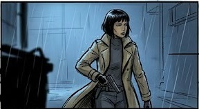
P2MEDIUM — TRACKING. The detective moves through the light — coat, gun, purpose. (2s)
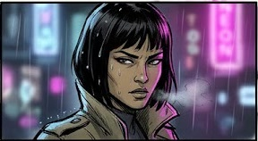
P3CLOSE-UP — SHALLOW DEPTH. Her face against the neon: eyes on the target. (2s)
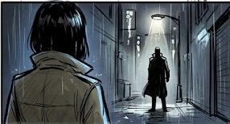
P4ONE-POINT PERSPECTIVE. A moody figure stands at the alley's end. Wary hold-and-shake. (3s)
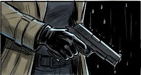
P5HARD RIM LIGHT. The pistol drawn from under the rim light — frozen mid-fall, maximum tension. (2s)
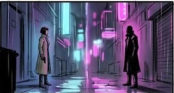
P6TWO-SHOT — STANDOFF. Both figures opposite — the standoff holds. (3s)
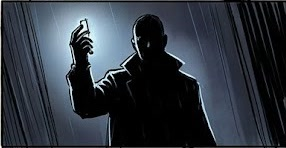
P7DUTCH TILT. Phone raised against the rain — unease in the angle. (2s)
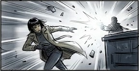
P8WHIP PAN — ACTION. She dives behind the dumpster — the exchange erupts. (2.5s)
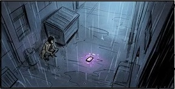
P9EXTREME WIDE — STILLNESS. Only the empty, quiet alley is the resolution mood. (3s)
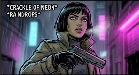
P10LOW ANGLE. The detective lowers her gun, breath misting. *CRACKLE OF NEON* *RAINDROPS* The alley is still. (2s)
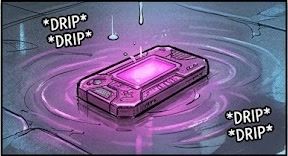
P11INSERT — THE ARTIFACT. A drop splashes off the glowing magenta device. *DRIP* *DRIP* Hummable pulse. (1.5s)
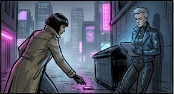
P12OVER-THE-SHOULDER. She picks the object up. A new figure watches — the tablet glows blue. (3s)
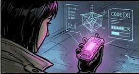
P13POV — HOLOGRAPHIC UI. The artifact projects its interface. Text: "SYS-LOG 0903." *HIGH-PITCH DATA-SYNC* (2.5s)
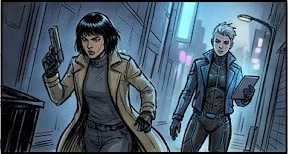
P14TWO-SHOT — GUN DRAWN. The detective spins. Character 2 stands. "You're late." (2s)
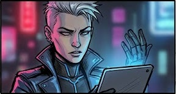
P15CLOSE-UP — SPIKE. Face split by red and blue light: "And that thing isn't yours." *DIGITAL STATIC* (2.5s)
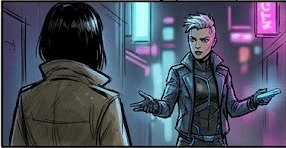
P16CONVERSATION. Spike makes the proposition: "I can get you in." (4s)
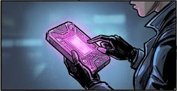
P17INSERT — HANDS. Spike holds the artifact, tablet verifies. Text: "VERIFIED." (1.5s)
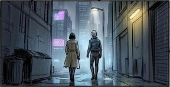
P18WIDE — THE DEAL. The duo leaves together, walking toward a new path. *FADING CONVERSATION + CITY HUM* (5s)
Act 2 · The Infiltration
P19–P27 · night market → vault door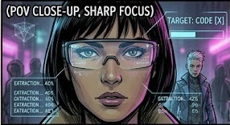
P19POV — AR INTERFACE. Sarah's HUD: code extraction in progress. TARGET: CODE [X] (2.5s)
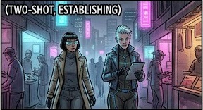
P20TRACKING — NIGHT MARKET. Through the crowd: food stalls, intense neon. (4s)
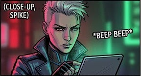
P21CLOSE-UP — SPIKE. Signal check: "It's close." Red and green light play. *BEEP BEEP* (2s)
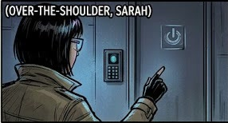
P22OTS — SARAH. The destination: a complex lock interface, visible. (3s)
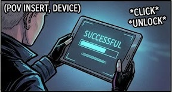
P23POV INSERT — DEVICE. Spike hacks the lock. System: "UNLOCKED." *CLICK* *UNLOCK* (1.5s)
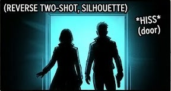
P24REVERSE TWO-SHOT — SILHOUETTE. Stepping into the new space. Cold cyan light. *HISS* (door) (2.5s)
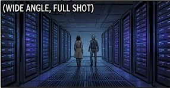
P25WIDE — ESTABLISHING. The server room: blue and purple lights, endless racks. (5s)
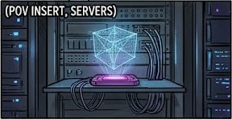
P26POV INSERT — SERVERS. Initial connection. Device integrated, holographic sync. (2s)
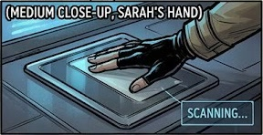
P27MED CLOSE-UP — SARAH'S HAND. Biometric scan initiated — she primes the final transfer. SCANNING… (3s)
Act 3 · The Core
P28–P36 · server vault P28
P28MEDIUM CLOSE-UP, BIOMETRIC INTERFACE. Lock confirmation — biometric scan converts the data packet into a physical key. *CLICK* *HISS* (2s)
 P29
P29EXTREME CLOSE-UP, KEY INSERTION. Insert shot — key physically engaged, security layers bypass. *MECHANICAL UNLOCK* (1.5s)
 P30
P30OVER-THE-SHOULDER, SARAH. Stepping into the new space — cold green light, total silhouette. (2.5s)
 P31
P31WIDE ANGLE, FULL SHOT. The heart of the network — central sphere activates with green light. (5s)
 P32
P32MEDIUM CLOSE-UP, SPIKE. Spike checks the signal: "It's close." Red and green light play. (2s)
 P33
P33POV INSERT, DEVICE. Initial connection — device is integrated, holographic sync. *CLICK* *UNLOCK* (2.5s)
 P34
P34WIDE SHOT, ESTABLISHING. Tracking through the central node — data flows like rain. (4s)
 P35
P35MEDIUM SHOT, DUAL FOCUS. The destination confirmed — time is running. Text: "ACCESS GRANTED… 00:03" (3s)
 P36
P36WIDE SHOT, REVERSE ANGLE. The duo leaves the scene, walking towards a new path. SFX: fading conversation and city hum. (5s)
P1–P36 · 3 acts · sequence total ≈ 80s · generated in Gemini (Nano Banana) threads from the locked prompt set below